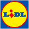
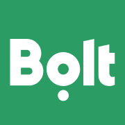

Ekranas po „Pradėti"
Trys variantai to paties: antraštė viršuje, mūsų tikra Apžvalga telefone, prekės ženklai aplinkui. Logotipai — tikri, iš assets/logos/. Sumos savos, ne nusižiūrėtos.
Sužinok, kur iš tikrųjų dingsta tavo pinigai
Prijungi banką — Vaultie pats sudėlioja išlaidas, pajamas ir prenumeratas.





Ženklas, antraštė, telefonas
Ta pati struktūra kaip Bilance, tik švaresnė. Viršuje — mūsų žiedas iš Apžvalgos, ne abstrakti ikona: tas pats elementas, kurį po sekundės pamatys telefone. Antraštėje mėlyna tik „iš tikrųjų".
Visas mėnuo —
viename ekrane
Kiekvieną eurą suskirstom automatiškai. Tau lieka tik pažiūrėti.
Telefonas pakrypęs, skaičiai iššokę
Trys stikliniai burbulai ištraukia tikrus skaičius iš ekrano — „−86,40 € prenumeratos", „sutaupei 25 %". Logotipai vieni nieko nežada; skaičiai žada. Lengvas posūkis daro telefoną daiktu, ne paveikslėliu.
Kur dingo
1 842 €
šį mėnesį?
Vaultie atsako per vieną ekraną — kategorijos, prenumeratos, kiek liko.
Klausimas vietoj pažado
Antraštė — klausimas su tikru skaičiumi, į kurį atsakymas guli tame pačiame ekrane. Telefonas didžiausias ir nukertamas apačioje: programėlė netelpa, todėl atrodo, kad joje yra daugiau.